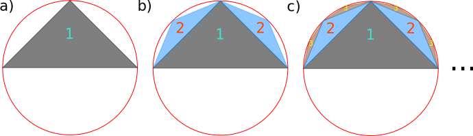

How to Calculate Pi in a New Way
Table of Contents
1. Introduction
A few days ago, in an attempt to explain recursion in computer programming, I came up with a recursive algorithm to cover a half-circle with traingles. As I kept on doing some basic calculations around this idea using absurdly simple mathematics, I saw that this method of covering can be used to create a recursive formula for calculating \(\frac{\pi}{2}\), which can also be further evaluated to a new infinite sum that evaluates to \(\frac{\pi^2}{4}\).
Reflecting back on this after some time, it seems to me that this simple problem presents an ample opportunity for teaching mathematics to a younger audience and has some pedagogical merit. That is why I decided to share it here with this brief note.
2. History of \(\pi\) and the Statement of the New Results
It is probably one of the oldest algorithms in recorded history to calculate the number \(\pi\) with higher and higher precision using polygons to approximate either the circumference or the area of a circle. The algorithm goes back to the great Archimedes. Following Archimedes, another great advancement in calculating \(\pi\) came with the famous formula by François Viéte:
\begin{equation} \frac{2}{\pi} = \frac{\sqrt{2}}{2}\times\frac{\sqrt{2+\sqrt{2}}}{2}\times\frac{\sqrt{2+\sqrt{2+\sqrt{2}}}}{2}\dots \end{equation}Now, the algorithm I will advance here, if looked at closely, is the very same thing: the colored areas approximating the half circle do in fact belong to polygons of higher and higher sides. However, the way with which we have built our algorithm means that we have devised a new way of summing over the terms contributing to the area. This simple summation yields a beautiful new formula for \(\pi\) that due to the existence of higher and higher number of nested square roots of 2, can be dubbed as a summation equivalent of the Viéte's formula. Here are the two theorems that I will prove here:
Theorem 1: For the following recursive formula:
\begin{equation*} S_{n+1} = 2^{n-1}\sqrt{\Big(1-\frac{S_{n-1}}{S_{n}}\Big)^2 + \Big(\frac{S_{n}}{2^{n-1}}\Big)^2} \end{equation*}with \(S_0 = 0\) and \(S_1 = 1\), we have:
\begin{equation*} \lim_{n \to \infty} S_n = \frac{\pi}{2} \end{equation*}
Theorem 2: The following equality holds:
\begin{equation*} \frac{\pi^2}{4} = 2 + \Big(2-\sqrt{2}\Big)^2 + 4\Big(2-\sqrt{2+\sqrt{2}}\Big)^2 + 16\Big(2-\sqrt{2+\sqrt{2+\sqrt{2}}}\Big)^2 +\dots \end{equation*}
The intersrting feature of both these theorems is that they do not at all appear to have geometrical roots upon a rudimentary analysis. But I will show below that they both foloow from a simple geometrical construction.
3. Algorithm for Covering a Half-Circle and Proofs
3.1. Proof for Theorem 1
The algorithm proceeds as seen in figure 1. We start by a circle of radius 1, halved by a single diameter. From the mid-point of the diameter, we move perpendicular to the diameter towards the circle. The point obtained thusly, together with the two points where the diameter intersects the circle create the vertices of our first triangle.

Figure 1: Covering a half-circle with triangles. From a) to c), we fill up remaining parts of the area with smaller and smaller triangles to cover more and more parts of the area.
The rest of the algorithm follows by repeating the same process with the free standing sides of the first traingle:
- Find the mid-point of the sides;
- Move perpendicular to the side until intersecting the circle;
- Create a new triangle with the new point and the two original points of the original traingle;
- Repeat for the remaining sides.
Figure 2: Our algorithm is in fact the same as the time immemorial method of approximating a circle with polygons! But this different way of counting the contribution of different parts to the total area gives rise to a new interesting series with higher and higher order of nested square roots of 2 reminiscent of Viéte's formula. But our series is an actual summation rather than an infinite product like that of Viéte's formula.
The proof can be started by the following realization first: going through the described algorithm covers the half-circle entirely. It is a simple geometrical proof along the same lines as the polygons with which we try to approximate a circle. The way the algorithm is set up, we see that it does not leave any spaces behind as it creates a better and better cover of the half circle as the steps proceed. So let us move forward now. Let us define:
\begin{equation} S_n = \sum_{m=1}^{n} a_m \label{Definition} \end{equation}where \(a_m\) is the area of all the triangles constructed in the \(m\) -th step. The fact that we can see how our trianlges are filling up the half-circle withouyt leaving behind any voids, means that:
\begin{equation} \lim_{n \to \infty}S_n = \frac{\pi}{2} \end{equation}Also, upon following through with the algorithm, we find that at each step \(n\), we have to add the area of \(2^{n-1}\) new triangles to the old summation.
We can immediately prove the recursive formula in theorem 1, if we take a closer look at the heights and bases of the trangles we construct as we move forward step by step in our construction algorithm:
\begin{equation} L_n = \sqrt{h_{n-1}^2 + \Bigg(\frac{L_{n-1}}{2}\Bigg)^2} \label{Main01} \end{equation} \begin{equation} S_n = 2^{n-2}L_n \label{Main03} \end{equation} \begin{equation} h_n = 1 - \frac{S_{n-1}}{S_n} \label{Main02} \end{equation}
Figure 3: Calculating the heights and the bases of each consecutive triangle constructed by our new algorithm.
Equation (\ref{Main01}) follows immediately from the Pythagorean theorem and a simple analysis of figure 3. We can construct the rest of the equations as follows. Let us examine the one triangle of the first step and the two triangles of the second step a little closer. By calculating the area of for half of the first triangle using the base of the second triangle \(L_2\) and observing that for the circle of radius unity the corresponding height is \(1-h_2\), we see that:
\begin{equation} \frac{1}{2}a_1 = \frac{1}{2}(1-h_2)L_2 = \frac{L_2}{2} -\frac{1}{2}a_2 \end{equation}In other words,
\begin{equation} \frac{1}{2}a_1 + \frac{1}{2}a_2 = \frac{L_2}{2} \end{equation}However, by definition (\ref{Definition}), we know that:
\begin{equation} \frac{1}{2}a_1 + \frac{1}{2}a_2 = \frac{1}{2}S_2 = \frac{L_2}{2} \end{equation}Following this line of thought for each step, taking into account that the number of triangles themselves double at each step, we immediately reach equation (\ref{Main03}).
For the final equation (\ref{Main02}), we observe that:
\begin{equation} 1 - \frac{S_{n-1}}{S_n} = \frac{S_n - S_{n-1}}{S_n} = \frac{a_n}{S_n} \end{equation}However, by virtue of equation (\ref{Main03}), we can express \(S_n\) in terms of \(L_n\):
\begin{equation} 1 - \frac{S_{n-1}}{S_n} = \frac{a_n}{S_n} = \frac{a_n}{2^{n-1}L_n} \end{equation}Since \(a_n\) contains precisely \(2^{n-1}\) equal area triangles with base \(L_n\), we observe:
\begin{equation} 1 - \frac{S_{n-1}}{S_n} = \frac{a_n}{2^{n-1}L_n} = \frac{\frac{1}{2}2^{n-1} h_n L_n}{2^{n-2}L_n} = h_n \end{equation}which proves equation (\ref{Main02}).
Using equations (\ref{Main01})-(\ref{Main02}), we can eliminate \(L_n\) and \(h_n\), and essentially remove all traces of a geometric reasoning:
\begin{equation} S_{n+1} = 2^{n-1}\sqrt{\Big(1-\frac{S_{n-1}}{S_{n}}\Big)^2 + \Big(\frac{S_{n}}{2^{n-1}}\Big)^2} \label{Theorem01} \end{equation}and thereby proving the first theorem! Note that to start the recursion we need the values for \(S_1 = 1\) and \(S_2=\sqrt{2}\). However, in an attempt to bury the geometric roots of the recursion relation deeper, we can, by relying on the algebraic properties of (\ref{Theorem01}) and define \(S_0 = 0\). Then, all the rest of \(S_n\) can be calculated starting from \(S_0\) and \(S_1\) alone.
3.2. Proof for Theorem 2
Starting from equation (\ref{Main01}), we can write:
\begin{align} \Big(\frac{S_n}{2^{n-2}}\Big)^2 = h_{n-1}^2 + \Big(\frac{S_{n-1}}{2^{n-2}}\Big)^2 \\ \Big(\frac{S_{n-1}}{2^{n-3}}\Big)^2 = h_{n-2}^2 + \Big(\frac{S_{n-2}}{2^{n-3}}\Big)^2 \\ \Big(\frac{S_{n-3}}{2^{n-4}}\Big)^2 = h_{n-3}^2 + \Big(\frac{S_{n-3}}{2^{n-4}}\Big)^2 \end{align} \begin{equation*} \vdots \end{equation*}The way these equations are ordered presents us with an excellent opportunity to break the recursion and obtain a direct, albeit infinite, summation. By adding the equations with appropriate factors of 2, we see:
\begin{equation} \Big(\frac{S_n}{2^{n-2}}\Big)^2 = h_{n-1}^2 + \frac{1}{4}h_{n-2}^2 + \frac{1}{16}h_{n-3}^2 + \dots + \frac{1}{4^{n-4}}(h_{1}^2 + (\frac{S_1}{2^0})^2) \end{equation}In other words:
\begin{equation} S_n^2 = 4^{n-2}h_{n-1}^2 + 4^{n-3}h_{n-2}^2 + 4^{n-4}h_{n-3}^2 + \dots + h_1^2 + 1 \label{Theorem02} \end{equation}At this stage of the proof, we must take a little help from basic trigonometry to make our proof much easier. As mentioned earlier, as we progress with the algorithm, at each step the new vertices we construct for our triangles dissect the circumference of the half-circle into more and more equidistant parts. In step 1 with a single triangle, the half-circle is divided in 2. In step 2, it is divided in 4 and in step 3, it is divided into 8 pieces. It is easy to see that in step \(n\), the half-circle is divided into \(2^n\) equidistant parts. In that case, if we define the angle in one of the triangles in step $n$ that is formed between the side of length $L_n$ and $L_{n-1}$ as $\theta_n$, we observe that\(\theta_n = \frac{\pi}{2^{n+1}}\) and:
\begin{equation} \frac{L_{n}}{2} = L_{n-1}\cos(\frac{\pi}{2^n}) \end{equation}In view of equations (\ref{Main03}) and (\ref{Main02}), we then see:
\begin{equation} h_n = 1 - \frac{L_{n-1}}{2L_n} = 1 - \cos(\frac{\pi}{2^{n+1}}) = 2\sin^2(\frac{\pi}{2^{n+2}}) \label{thunderbolt} \end{equation}At this point, we need the following lemma to continue:
Lemma: For all integer \(n\), where \(n \ge 2\):
\begin{equation*} \sin(\frac{\pi}{2^{n}}) = \frac{1}{2}\underbrace{\sqrt{2-\sqrt{2 + \sqrt{2 + \sqrt{\dots +2}}}}}_\text{$n-1$ occurrences of 2} \end{equation*}Proof: Proof can be carried out using inductance. We first note that for \(n = 2\) and \(n = 3\):
\begin{align} \sin{\frac{\pi}{4}} = \frac{1}{2}\sqrt{2} \\ \sin{\frac{\pi}{8}} = \frac{1}{2}\sqrt{2 - \sqrt{2}} \end{align}Assuming that the form indicated by the lemma holds for \(\sin(\frac{\pi}{2^{n}})\), we prove that the nested square roots form also exists for the \(\sin(\frac{\pi}{2^{n+1}})\):
\begin{equation} \sin(\frac{\pi}{2^{n}}) = 2\sin(\frac{\pi}{2^{n+1}})\cos(\frac{\pi}{2^{n+1}}) = 2\sin(\frac{\pi}{2^{n+1}})\sqrt{1 - \sin^2(\frac{\pi}{2^{n+1}})} \end{equation}Denoting \(y = \sin(\frac{\pi}{2^{n}})\) and \(z = \sin(\frac{\pi}{2^{n+1}})\), we can rewrite:
\begin{equation} y^2 = 4 z^2 - 4 z^4 \rightarrow z^2 = \frac{1}{2} - \frac{1}{2}\sqrt{1-y^2}=\frac{1}{2}-\frac{1}{4}\underbrace{\sqrt{2 + \sqrt{2+\sqrt{\dots+2}}}}_\text{$n-1$ occurrences of 2} \end{equation}which immediately yields:
\begin{equation} z = \sin(\frac{\pi}{2^{n+1}}) = \frac{1}{2}\underbrace{\sqrt{2 - \sqrt{2 + \sqrt{2 + \sqrt{\dots +2}}}}}_\text{$n$ occurrences of 2} \end{equation}This finishes the proof of our lemma.
Using the lemma, equation (\ref{Theorem02}) and (\ref{thunderbolt}), we can finally prove theorem 2:
\begin{equation} S_n^2 = 1 + \underbrace{h_1^2}_\text{equals to 1} + \dots + 4^{n-2}\sin^4(\frac{\pi}{2^{n}})+4^{n-1}\sin^4(\frac{\pi}{2^{n+1}}) \label{LastStep} \end{equation}Since \(S_n\) yields \(\frac{\pi}{2}\) as \(n\) tends to infinity, we can rewrite (\ref{LastStep}) as an infinite summation:
\begin{equation} 1 + 1 + 16\sin^4(\frac{\pi}{2^3}) + \dots + 4^{n-2}\sin^4(\frac{\pi}{2^{n}})+4^{n-1}\sin^4(\frac{\pi}{2^{n+1}}) + \dots = \frac{\pi^2}{4} \end{equation}which can be rewritten with lemma as folows, proving theorem 2:
\begin{equation} 1 + 1 + (2-\sqrt{2})^2 + 4(2-\sqrt{2 + \sqrt{2}})^2 + \dots = \frac{\pi^2}{4} \end{equation}4. Conclusions
As mentioned earlier, the new algorithm described here is equivalent to approximating a circle with polygons. In figure 2, we can see that at \(n = 3\), my algorithm is indeed equivalent to approximating the area of a circle with a 16-gon. Then again, it can be argued that all infinite series, summations, and multiplications yielding \(\pi\) are, at their core, different methods of covering the area or circumference of a circle! After all, they all eventually yield the value of \(\pi\)! However, the more sophisticated formulas, like the Ramanujan-Sato series, are much harder to decipher geometrically and require more advanced mathematical tools. Nonetheless, for the pedagogical approach of this short post, this approach is quite marvelous in and of itself!
Created: 2024-04-18 Thu 16:30